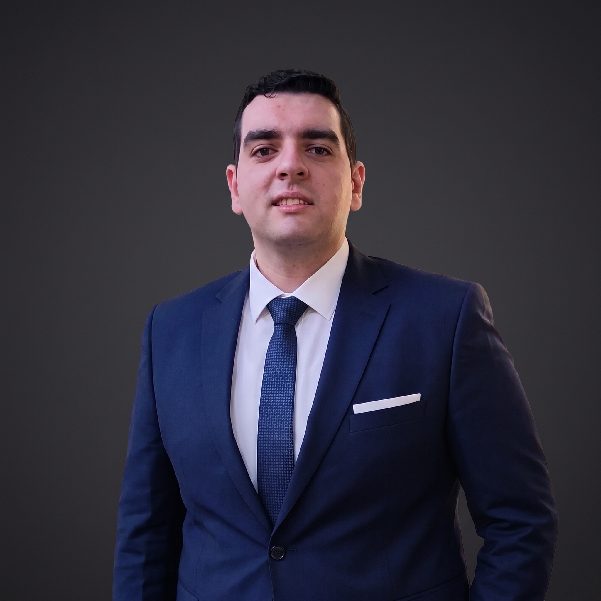

I'm a Junior AI Engineer & Data Analyst from Cairo. I work on Generative AI, Agentic and RAG systems, computer vision, and turning raw data into decisions.

Computer Science graduate from Tanta University with hands-on experience across Machine Learning, Deep Learning, Generative AI and Agentic/RAG systems, backed by a strong data-analysis foundation in Python, SQL and BI tools. I've shipped projects spanning computer vision, NLP, multi-agent systems, workflow automation and production-style RAG pipelines, and I led a 4-person team to an A+ graduation project.
I like building things that work end to end: from data collection and modelling to APIs, Docker and a usable interface.
Internships and practical training across Generative AI, machine learning and data analysis.
Select a project to watch its demo and read the details.
Tools and concepts I use day to day.
Select a certificate to view it in full size.
Digital Egypt Pioneers Initiative (DEPI), Generative AI Track (Nov 2025 – Jul 2026): 200 hours covering ML/DL, Generative AI (VAEs, GANs, diffusion), RAG, prompt engineering and multi-agent AI.
Instant Academy, AI & Data Analyst Course (Oct 2024 – Jul 2025): Python, SQL, Power BI, Scikit-learn, TensorFlow/Keras, OpenCV, YOLO, NLP and Streamlit.
I'm open to AI engineering and data roles. Send me a message and I'll get back to you.